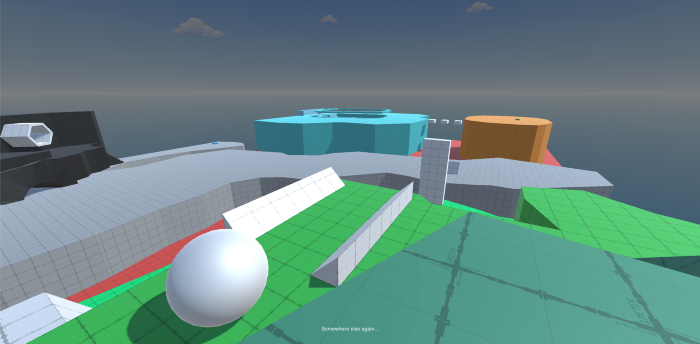

Second Playable
This week, the two levels we presented previously underwent various improvements in sound design, visual presentation and gameplay. The first level we showed last week was the “Hot Cold” level. In the center of the stage is a large seesaw contraption that is being thrown out of balance by falling viruses. The player must pick up giant pill bottles and place them in the buckets in order to balance out the seesaw. Too far to one side, and your temperature will start to rise. Too far to the other, and it will begin to plummet.
This stage underwent a major overhaul based on the feedback we received from the previous week. Before, pills would pile up in one location, which meant the player would only need to go back and forth between the pill pile and the bucket in order to complete the task. There was no need to make use of the teleporters or adapt your strategy. We now make only a few pills spawn at a time. Additionally, we scatter these spawn locations around the map, forcing the player to move throughout the entire level, learning its layout.
Before, it was difficult to see exactly what was in the buckets of the seesaw, so we added a basketball scoreboard at the top of the arena; the teams are VIRUS versus MEDICINE. Another display shows countdown until the next virus drop, and a “threat level” which indicates how heavy that virus will be. This threat level can be anywhere from “mild” to “deadly”.
We ran into one compatibility issue with a package we imported to get an “icy” effect over the screen when the player is hypothermic. This effect looks normal on Windows, but when building for Mac, the screen is rendered completely gray and nothing can be seen. We will find a cross-platform solution in the future. The Mac build for this week will have this effect disabled.
We hope the improved spawn locations and additional information will add greater strategy and reduce confusion. We are eager to see how people react to this revamped gameplay.
The timed maze level got a visual overhaul and is a bit more moody! Colored lights were placed around the doors and switches to make the gameplay mechanics more clear. The skybox was changed to a surreal, colorful shader material as well. During our play sessions last week, we were told to bring back some of the “trippier” elements from our earlier demos. The visual presentation is still far from finished, but we believe it is a step in the right direction.
We also plan to present a level this week that we weren’t able to present last week, which has the player switching between two characters to solve environmental puzzles. The first character can run and jump while the second character is in a wheelchair; both are needed to reach the end.
There were also quite a few sound design improvements. Sound effects were added to highlight the character’s physical condition; a heartbeat plays while you are underwater, your character’s breathing will change when you have a high fever or are hypothermic on top of various other subtle enhancements.
We toyed with the idea of including comic-book pages hidden in each level in order to bring in the narrative. However, we came to realize that writing, storyboarding and inking an entire comic would be out of scope for what we have time for. Instead, we plan to have handwritten notes as collectibles.
At this point, we are hoping to finalize some of the gameplay elements so we can turn to polish, however we will still be flexible enough to accommodate changes. We look forward to having our peers get their hands on this new playable!